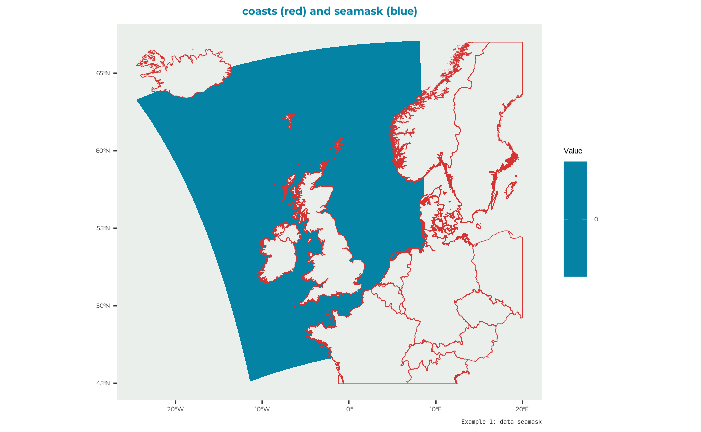
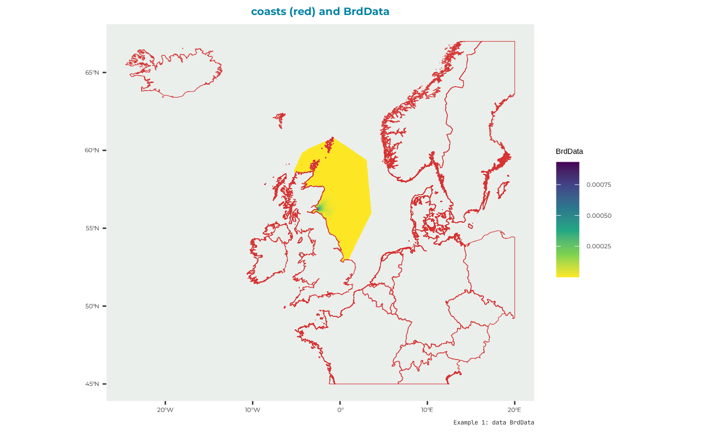
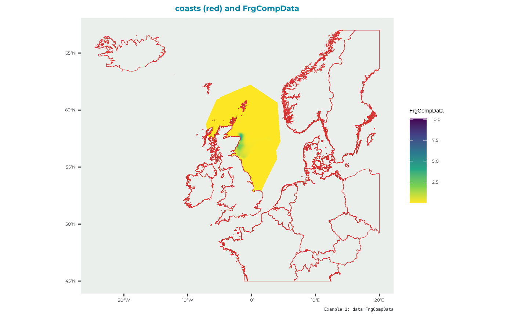
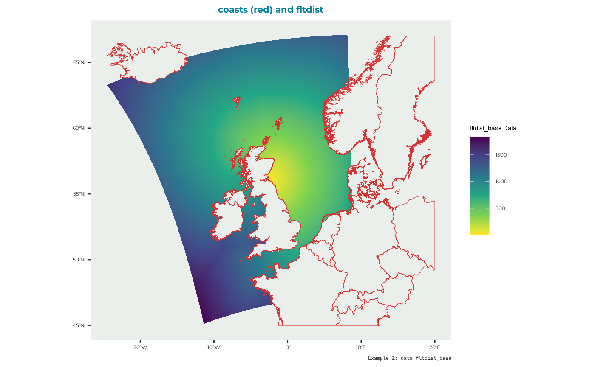
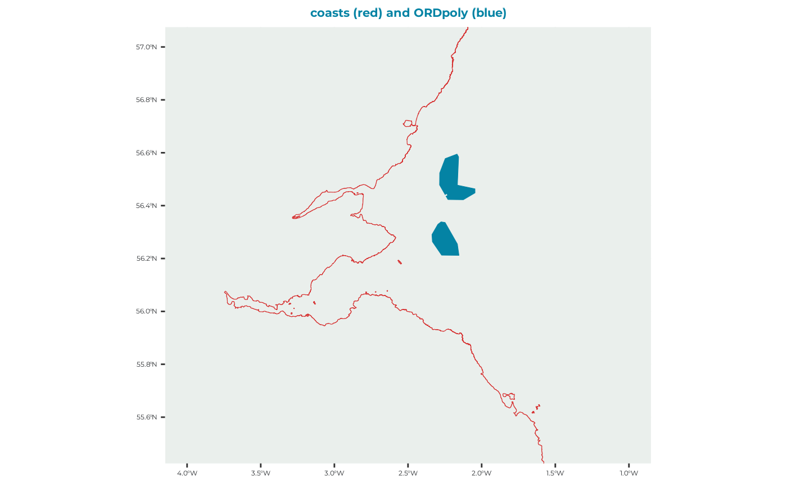

Example kittiwake: step 1 - seabORD inputs
C_KI_inputs.RmdLoad the seabORD package
library(seabORD)Preparing the inputs
To run seabORD several inputs are needed:
| arguments | type | description |
|---|---|---|
| Par | List | The main parameters controlling/defining this run e.g., species and colony |
| modPar | List | Parameters relating to the model mode and computer environment |
| ordPar | List | Input parameters relating to the ORDs |
| switches | List | A set of switches/flags used to control optional features of the run and determine range of outptus |
| seamask | Raster | land/sea grid, 1km expected. |
| spadat1 | Tibble | Information relating to the colony/SPA |
| spadat2 | Tibble | Information relating to the colony/SPA |
| spdat | Dataframe | Species-specific parameters |
| BrdData | Raster | Bird distribution map - derived from GPS data or failing that, a distance-decay model |
| FrgCompData | Raster | Competition distribution map - derived from GPS data or failing that, a distance-decay model |
| fltdist_base | Raster | Flight distance by sea, without ORDs. See user guide for details. |
| FlightGridcorrection | Raster | Flight distance transition layer (gdistance) corrected for distortions relating to the CRS |
| ORDpoly | Multipolygon (simple features) | The ORD footprints |
The package comes with some example input data to run the model with. Here’s an example run of the model with detailed explanation for each input argument.
Par
List for biological parameters:
thisSpecies: The species being used. You can select from “KI” (kittiwake), “GU” (guillemot), “RA” (razorbill), or “PU” (puffin)
colonies: The code number for the colony/SPA being modelled
Nscalefactor: What proportion of the total population do you want to run the model for i.e., Nscalefactor = 1 is for 100% of the population, where 0.1 would represent 10% of the population which may be useful for test runs.
Prob_Displacement: The proportion of individual birds which will experience displacement effects if interacting with an ORD during a certain trip. E.g., if Prob_Displacement = 0.6, 60% of individuals will be displacement susceptible.
Prob_Barrier: The proportion of individuals which experience displacement effects, which will also experience barrier effects. E.g., if Prob_Barrier = 1, 100% of individuals which are displacement susceptible will also be barrier effect susceptible (i.e., 60% of total population)
PreyType: This dictates the type of prey layer used in the simulation, which is typically set to “uniform”, meaning all prey cells begin with the same prey value.
collision: Not currently used
SiteSelectionMethod: Set to “Map” currently, but options to add in a distance decay module.
MaxDistancekm: Not currently used in this version
PropInRange: Not currently used in this version
Npairspercol: The number of pairs of adult birds at the given colony/SPA
Pmedian: The value of prey in cells in this particular replicate. Prior to running the simulation with ORDs this must be determined in a calibration step.
Par_example <- seabORD::example_1_lists$Par
str(Par_example)
#> List of 12
#> $ thisSpecies : chr "KI"
#> $ colonies : chr "UK9004171"
#> $ Nscalefactor : num 1
#> $ Prob_Displacement : num 0.6
#> $ Prob_Barrier : num 1
#> $ PreyType : chr "Uniform"
#> $ collision : chr "Off"
#> $ SiteSelectionMethod: chr "Map"
#> $ MaxDistancekm : num 0
#> $ PropInRange : num 0
#> $ Npairspercol : num 2898
#> $ Pmedian : num 158modPar
List for model parameters.
Nparallel: This is used for parallel runs only (i.e., set to “NA” for runs on local machine) to indicate which replicate is being run which will dictate the seed being so that reproducibility is conducted in the same fashion as for local runs.
initialseed: A seed for reproducibility.
reference: A name to be attached to folders and files emanating from this particular simulation which will be generated from other outputs in the order of: model environment; model mode (calibration/scenario); species, colony ID. E.g., “serial_scenario_KI_UK9004171”
outputdir: The file directory where outputs from your model will be saved to.
Nreplicates: The number of replicates being used
make a folder in the directory to store your output (you can place it wherever)
# Create the ouput folder "output_seabORD" if not existing already
if (!dir.exists("output_seabORD")) {
dir.create("output_seabORD")
}and then the list of modPar
modPar_example <- seabORD::example_1_lists$modPar
str(modPar_example)
#> List of 5
#> $ Nparallel : logi NA
#> $ initialseed: num 6598
#> $ reference : chr "serial_scenario_KI_UK9004171"
#> $ outputdir : chr "output_seabORD"
#> $ Nreplicates: num 1ordPar
List for wind farm parameters
include_ORDs: Code names of ORDs to be included in this run, e.g., “NEART” is Neart na Gaoithe
parnames: Further naming of wind farms to be included
FootprintBorder: The extension distance (km) of the buffer around the ORD which birds avoid
BufferZone: Also known as the displacement zone, this is the distance (km) extending beyond the FootprintBorder where displacement susceptible birds will be displaced to.
ordPar_example <- seabORD::example_1_lists$ordPar
str(ordPar_example)
#> List of 4
#> $ include_ORDs : chr [1:2] "NEART" "INCAP"
#> $ parnames : chr "NEART;INCAP"
#> $ FootprintBorder: num 2
#> $ BufferZone : num 5Switches
This parameter requires a llist() object that defines the optional features of the run. It accepts the following options:
environment : “serial” or “parallel”
modelmode: “scenario” or “calibration”
debugmode: 0, 1, or 2 - typically used during development so can be ignored
bycol: TRUE or FALSE
bysus: TRUE or FALSE
bych: TRUE or FALSE
printdaily: TRUE or FALSE - an option to print out daily outputs from each timestep for all modelled indiviudals
printseason: TRUE or FALSE - more detailed outputs from each season (baseline/scenario), as opposed to teh higher level summary issued as standard.
printpair: TRUE or FALSE - more detailed outputs from each pair.
minout: TRUE or FALSE - to be completed
silent: TRUE or FALSE - to be completed
saverds: TRUE or FALSE - This should nearly always be set to TRUE, as this is the standard output summary.
savebirdflightmap: TRUE or FALSE - an option to view a map of foraging locations from this simulation, which can be used as a visual check that the simulations are executing as intended i.e., have you run a simulation with the correct colony and wind farm set up.
There is an example list available in the package that can be accessed by simply call in the built-in list “example_switch_list”:
#get the example switches list
switches_example <- seabORD::example_1_lists$switches
#check the setting of this example
str(switches_example)
#> List of 14
#> $ environment : chr "serial"
#> $ modelmode : chr "scenario"
#> $ debugmode : num 0
#> $ bycol : logi FALSE
#> $ bysus : logi FALSE
#> $ bych : logi FALSE
#> $ printdaily : logi FALSE
#> $ printseason : logi FALSE
#> $ printpair : logi FALSE
#> $ printfinal : logi FALSE
#> $ minout : logi FALSE
#> $ silent : logi FALSE
#> $ saverds : logi FALSE
#> $ savebirdflightmap: logi FALSEIn this example seabORD will in serial and in scenario mode; without debugging and by saving the output as a .rds file.
seamask
Used to indicate where the sea is. Example data to be used as seamask can be found built in the package as “seamask_3035_example” to make the raster for the seamask:
example_data_seamask <- seabORD::seamask_3035_example
str(example_data_seamask)
#> List of 2
#> $ matrix : num [1:3469400, 1] 0 0 0 0 0 0 0 0 0 0 ...
#> ..- attr(*, "dimnames")=List of 2
#> .. ..$ : NULL
#> .. ..$ : chr "seamask_3035"
#> $ metadata:List of 7
#> ..$ n_rows: num 2200
#> ..$ n_cols: num 1577
#> ..$ x_min : num 2661966
#> ..$ x_max : num 4238966
#> ..$ y_min : num 2685159
#> ..$ y_max : num 4885159
#> ..$ crs : chr "PROJCRS[\"unknown\",\n BASEGEOGCRS[\"unknown\",\n DATUM[\"Unknown based on GRS80 ellipsoid\",\n "| __truncated__We can use this data to make the raster using the raster package
#make a raster with the right dimension/proj/extents etc.
seamask_example <-
raster::raster(
nrows = example_data_seamask$metadata[["n_rows"]],
ncols = example_data_seamask$metadata[["n_cols"]],
xmn = example_data_seamask$metadata[["x_min"]],
xmx = example_data_seamask$metadata[["x_max"]],
ymn = example_data_seamask$metadata[["y_min"]],
ymx = example_data_seamask$metadata[["y_max"]],
crs = example_data_seamask$metadata[["crs"]]
)
#fill it with the data available
seamask_example <- raster::setValues(seamask_example, #the raster
example_data_seamask$matrix) #the values
#Set the name of the layer
names(seamask_example) <- "seamask_3035"which looks like:

spadat1
For this example the values for spadat1 for the site “UK9004171” are taken from the built-in dataset “spacoordinates” which has data for all the sites relevant for the CEF. Get only what’s relevant for this example.
#open the dataset provided with the pacakge
spadat1_example <-
tibble::as_tibble( #as a tibble
dplyr::filter(seabORD::spacoordinates, #the full dataset
SITECODE == "UK9004171") #the iste of interest
)
print(t(spadat1_example)) #display the data for the example site
#> [,1]
#> SITECODE "UK9004171"
#> CEF.include "TRUE"
#> Marine "FALSE"
#> Longitude "-2.564"
#> Latitude "56.186"
#> dat.CELLNO "1658699"
#> dat.ATSEA "TRUE"
#> flt.LONG "-2.558333"
#> flt.LAT "56.18875"
#> flt.CELLNO "1658699"
#> flt.ATSEA "TRUE"
#> flt.DIST "0.4661833"
#> flt.near "TRUE"
#> datxy.E "3544920"
#> datxy.N "3743923"
#> datxy.CELLNO "1800240"
#> datxy.ATSEA "TRUE"
#> fltxy.E "3544466"
#> fltxy.N "3743659"
#> fltxy.CELLNO "1800240"
#> fltxy.ATSEA "TRUE"
#> fltxy.DIST "525.4244"
#> fltxy.near "TRUE"spadat2
Can be derived from “spalist”
spadat2_example <-
tibble::as_tibble( #as a tibble
dplyr::filter(seabORD::spalist, #the whole list
SITE_CODE == "UK9004171") #the site of interest
)
#take a look
print(t(spadat2_example))
#> [,1]
#> SITE_CODE "UK9004171"
#> SITE_NAME "Forth Islands"
#> CEF.include "Y"
#> Marine.only NA
#> Altnames.sufficient NA
#> Altnames.SPApolys NA
#> Altnames.SMP NA
#> Altnames.Productivity NA
#> Altnames.BDMPS NA
#> Altnames.FR NAspdat
The species specific data for the Black-legged Kittiwake be derived from the built in dataset “energeticsandpreydata” that has data for all 4 species that seabORD models.
spdat_example <-
#tibble::as_tibble( #as a tibble
dplyr::filter(seabORD::energeticsandpreydata,
Code == "KI")
# )
#take a look
print(t(spdat_example))
#> [,1]
#> Code "KI"
#> Species "Black-legged Kittiwake"
#> BM_adult_mn "372.69"
#> BM_adult_sd "33.62"
#> BM_adult_mortf "0.6"
#> BM_adult_abdn "0.8"
#> BM_chick_mn "36"
#> BM_chick_sd "2.2"
#> BM_Chick_mortf "0.6"
#> daylength "36"
#> seasonlength "30"
#> unattend_max_hrs "18"
#> adult_DEE_mn "802"
#> adult_DEE_sd "196"
#> chick_DER "525.7"
#> IR_max "4.369"
#> IR_half_a "900"
#> IR_half_b "0.02"
#> flight_msec "13.1"
#> assim_eff "0.74"
#> energy_prey "6.52"
#> energy_nest "427.8"
#> energy_flight "1400.7"
#> energy_searest "400.6"
#> energy_forage "1400.7"
#> energy_warming "26"
#> chick_mass_a "11"
#> adult_mass_KG "38.5"
#> beta "0.038"
#> basesurv_poor "0.65"
#> basesurv_modr "0.8"
#> basesurv_good "0.9"
#> massloss_poor "20"
#> massloss_modr "10"
#> massloss_good "0"
#> chicksurv_poor "10"
#> chicksurv_modr "50"
#> chicksurv_good "100"BrdData
Bird distribution map. There is a built in example dataset for this run which is derived from GPS data and modelled with a GAM incorporating important factors known to drive space use in this species. This is a raster file that must re-constructed from the data as follows (as for seamask).
example_data_brd <- seabORD::BrdData_example
#make the raster with the right dimensions..
BrdData_example <-
raster::raster(
nrows = example_data_brd$metadata[["n_rows"]],
ncols = example_data_brd$metadata[["n_cols"]],
xmn = example_data_brd$metadata[["x_min"]],
xmx = example_data_brd$metadata[["x_max"]],
ymn = example_data_brd$metadata[["y_min"]],
ymx = example_data_brd$metadata[["y_max"]],
crs = example_data_brd$metadata[["crs"]]
)
#fill it with the data
BrdData_example <- raster::setValues(BrdData_example,
example_data_brd$matrix)
#Set the name of the layer
names(BrdData_example) <- "Forth.Islands"Which has data that plot like this:
BrdData_example_repr <-
terra::rast(BrdData_example) %>%
terra::project(terra::crs(uk_map))
BrdData_df <- as.data.frame(BrdData_example_repr, xy = TRUE)
ggplot2::ggplot() +
# Plot the raster
ggplot2:: geom_raster(data = BrdData_df, ggplot2::aes(x = x, y = y, fill = ifelse(Forth.Islands == 0, NA, Forth.Islands))) +
# Add the reprojected UK boundary
ggplot2::geom_sf(data = uk_map, fill = NA, color = "#D63333", size = 1.5) +
# Customize the plot
theme_bslib + #palette theme
ggplot2::scale_fill_viridis_c(
na.value = "gray", # Set the color for NA (i.e., for 0 values)
name = "BrdData", direction = -1) +
ggplot2::labs(fill = "BrdData Raster Value",
title = "coasts (red) and BrdData",
caption = "Example 1: data BrdData")
FrgCompData
Competition distribution map i.e., the distribution of conspecifics from surrounding colonies which may interact with the colony/SPA being simulated. This is used throughout the model to estimate how competition from other colonies influences intake rate at different foraging sites.
example_data_frg <- seabORD::frgcompdata_example
#make the raster with the right dimensions..
FrgCompData_example <-
raster::raster(
nrows = example_data_frg$metadata[["n_rows"]],
ncols = example_data_frg$metadata[["n_cols"]],
xmn = example_data_frg$metadata[["x_min"]],
xmx = example_data_frg$metadata[["x_max"]],
ymn = example_data_frg$metadata[["y_min"]],
ymx = example_data_frg$metadata[["y_max"]],
crs = example_data_frg$metadata[["crs"]]
)
#fill it with the data
FrgCompData_example <- raster::setValues(FrgCompData_example,
example_data_frg$matrix)
#Set the name of the layer
names(FrgCompData_example) <- "Forth.Islands"which looks like:

fltdist_base
Flight distance by sea, without ORDs. See user guide for details.
UK9004171_bysea <- seabORD::UK9004171_bysea_3035
#make the raster with the right dimensions..
fltdist_base_example <-
raster::raster(
nrows = UK9004171_bysea$metadata[["n_rows"]],
ncols = UK9004171_bysea$metadata[["n_cols"]],
xmn = UK9004171_bysea$metadata[["x_min"]],
xmx = UK9004171_bysea$metadata[["x_max"]],
ymn = UK9004171_bysea$metadata[["y_min"]],
ymx = UK9004171_bysea$metadata[["y_max"]],
crs = UK9004171_bysea$metadata[["crs"]]
)
#fill it with the data
fltdist_base_example <- raster::setValues(fltdist_base_example,
UK9004171_bysea$matrix)
#as a raster brick. #WHY? only one layer
fltdist_base_example <- raster::brick(fltdist_base_example)
#Set the name of the layer
names(fltdist_base_example) <- "UK9004171"which looks like:

FlightGridcorrection
It’s a TransitionLayer class object. One example provided that can be loaded
FlightGridcorrection <- seabORD::FlightGridcorrection_3035ORDpoly
This is a set of polygons used to represent the ORDs that we are intending to predict the impact of.
ORDpoly_example <- seabORD::ORDpoly_examplewhich is a dataset with this multipolygon shapes:
